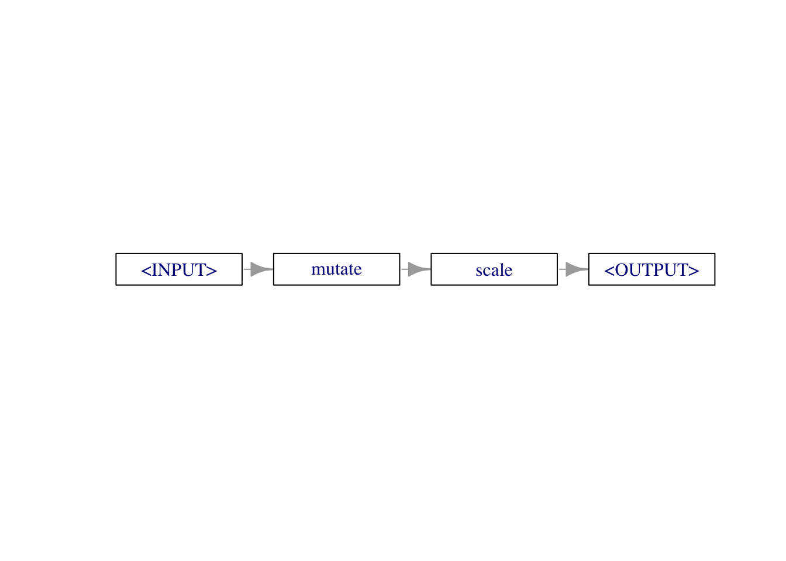
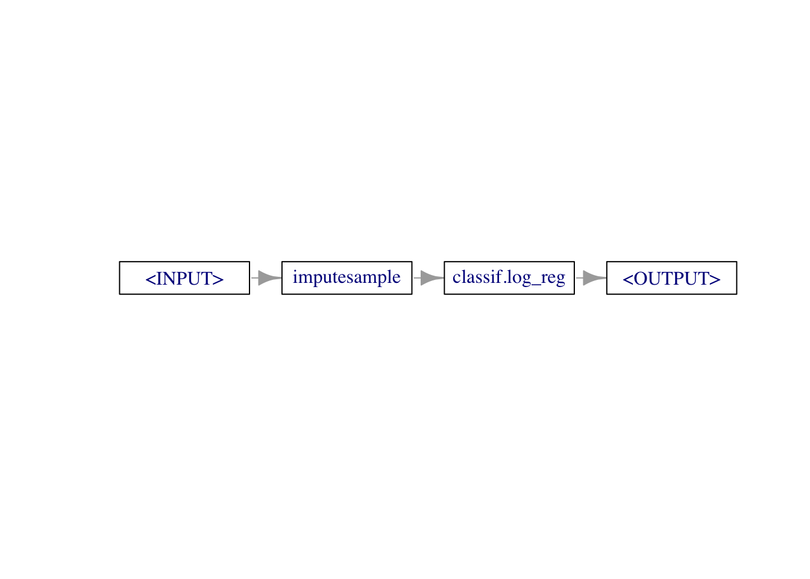

library(data.table)
library(mlr3verse)
library(mlr3pipelines)
library(mlr3pipelines)
as.data.table(mlr_pipeops)[1:6,1:2]
안내사항
0. 인트로
전처리를 수행할 수도 있고, 태스크 일부분 선택, 러너 생성 후 예측, 앙상블 등의 작업을 수행할 수 있습니다.
1. PipeOp: Pipeline 연산자
mlr3pipelines의 기본 클래스는 PipeOp로, pipeline operator의 줄임말입니다. Task를 훈련하는 것과 같이 변화를 주는 작업을 수행하고 결과를 출력합니다.
PipeOp는 러너와 같이 $train(), $predict() 메서드를 포함하고 있습니다. 또한 Learner처럼 파라미터 뿐만 아니라 하이퍼파라미터를 갖고 있어, 사용자들이 PipeOp을 만들 때, $param_set을 통해 확인 후 파라미터들을 설정할 수 있습니다.
PipeOp 역시 다른 클래스와 마찬가지로 po()라는 sugar function을 통해 만들 수 있습니다.
po_onehot = po('encode', method="one-hot")
po_onehotPipeOp: <encode> (not trained)
values: <method=one-hot>
Input channels <name [train type, predict type]>:
input [Task,Task]
Output channels <name [train type, predict type]>:
output [Task,Task]PipeOp 객체를 살펴보면, 아직 훈련되지 않은 것을 알 수 있습니다 (not trained).
또한 Input channels와 Output channels 값은 해당 PipeOp의 입력, 출력 유형을 알려줍니다. 예를 들어, 위의 PipeOp는 Task를 입력받아 Task 형태로 출력하게 됩니다.
이 부분이 Learner 클래스와의 차이점입니다. 러너는 학습 후 아무런 결과를 출력하지 않기 때문입니다.
task = tsk("penguins")
po_onehot_in = list(task$clone()$select(c("island","sex"))$filter(1:10))
po_onehot_out = po_onehot$train(po_onehot_in)
po_onehot_out$output
<TaskClassif:penguins> (10 x 6): Palmer Penguins
* Target: species
* Properties: multiclass
* Features (5):
- dbl (5): island.Biscoe, island.Dream, island.Torgersen, sex.female,
sex.male출력 객체에서 메서드를 통해 PipeOp 작업이 수행된 데이터를 확인할 수 있습니다.
po_onehot_out$output$head()학습이 됐다면, $predict() 메서드를 통해 테스트 데이터를 넣어 결과를 확인할 수 있습니다.
task_onepenguin = task$clone()$select(c('island','sex'))$filter(50)
poin = list(task_onepenguin)
poout = po_onehot$predict(poin)
poout$output$data()2. 그래프: PipeOps의 네트워크
PipeOp는 머신러닝 파이프라인에서 개별 단위의 계산들을 대표합니다. 이러한 파이프라인은 Graph (PipeOp들이 연결되어 데이터의 흐름을 나타내는 객체에 의해 정의될 수 있습니다.
Graph를 만드는 가장 편리한 방법은 %>>% (double-arrow) 연산자를 이용해 PipeOp들을 연결하는 것입니다. PipeOp의 연결은 아래와 같이 수행됩니다.
po_mutate = po("mutate",
mutation = list(bill_ratio = ~bill_length / bill_depth))
po_scale = po("scale")
graph = po_mutate %>>% po_scale
graphGraph with 2 PipeOps:
ID State sccssors prdcssors
<char> <char> <char> <char>
mutate <<UNTRAINED>> scale
scale <<UNTRAINED>> mutate출력결과는 그래프의 레이아웃에 대한 정보를 보여줍니다.
Double arrow 연산자 단축키 설정
arrow 연산자 (%>% 또는 |>)의 단축키는 ctrl+shift+m이지만, double-arrow 연산자는 단축키가 없으므로, snippet 설정을 통해 단축키를 만들어줄 수 있습니다!
그래프 객체는 $plot() 메서드를 통해 그래프를 시각화할 수 있습니다.
graph$plot(horizontal = TRUE)
$pipeops 필드를 통해서 그래프에 포함된 각각의 Pipeop 객체의 정보를 확인할 수 있고,
graph$pipeops$mutate
PipeOp: <mutate> (not trained)
values: <mutation=<list>, delete_originals=FALSE>
Input channels <name [train type, predict type]>:
input [Task,Task]
Output channels <name [train type, predict type]>:
output [Task,Task]
$scale
PipeOp: <scale> (not trained)
values: <robust=FALSE>
Input channels <name [train type, predict type]>:
input [Task,Task]
Output channels <name [train type, predict type]>:
output [Task,Task]그래프가 연결된 edge에 대해 접근할 수도 있습니다.
graph$edges%>>% 대신$add_pipe()와 $add_edge() 메서드를 이용해 그래프를 만들어줄 수 있습니다.
graph = Graph$new()$
add_pipeop(po_mutate)$
add_pipeop(po_scale)$
add_edge("mutate", "scale")Graph를 만든 뒤에는, Learner처럼 $train(), $predict()를 이용해 PipeOp들을 적용한 값을 출력할 수 있습니다.
result = graph$train(task$clone()$filter(1:100))
result$scale.output$data()[1:3]result = graph$predict(task$clone()$filter(101))
result$scale.output$head()3. 순서가 있는 Learner 파이프라인
mlr3pipelines은 주로 머신러닝에서 결측치(NA) 대체, 범주 인코딩과 같은 데이터 전처리를 할 때 사용될 것입니다.
lrn_logreg = lrn("classif.log_reg")
graph = po("imputesample") %>>% lrn_logreg
graph$plot(horizontal = TRUE)
graph를 learner로 활용하기 위해서 as_learner() 함수를 이용합니다.
glrn_sample = as_learner(graph)
glrn_mode = as_learner(po("imputemode") %>>% lrn_logreg)
design = benchmark_grid(
tasks = tsk("pima"),
learners = list(glrn_sample, glrn_mode),
resamplings = rsmp("cv", folds=5)
)
bmr = benchmark(design)
aggr = bmr$aggregate()[,.(learner_id, classif.ce)]
aggr성능 확인 결과, sampling imputation을 통한 결과가 약간 더 좋게 나오는 것을 알 수 있습니다.